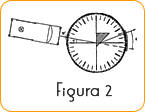

Introducción
La refracción es el cambio de dirección que experimenta una onda al pasar de un medio material a otro. Sólo se produce si la onda incide oblicuamente sobre la superficie de separación de los dos medios y si éstos tienen índices de refracción distintos. Esto también puede observarse, con objetos sólidos como lápices al introducirlos en el agua. La refracción se origina en el cambio de velocidad que experimenta la onda. El índice de refracción es precisamente la relación entre la velocidad de la onda en un medio de referencia (el vacío para las ondas electromagnéticas) y su velocidad en el medio de que se trate.
Un ejemplo de este fenómeno se ve cuando se sumerge un lápiz en un vaso con agua: el lápiz parece quebrado. También se produce refracción cuando la luz atraviesa capas de aire a distinta temperatura, de la que depende el índice de refracción. Los espejismos son producidos por un caso extremo de refracción, denominado reflexión total.
Objetivos
Estudiar cómo se refracta la luz en un prisma.
Determinar el ángulo total de refracción en un prisma, en función del ángulo de incidencia de la luz.
Cuida que el haz estrecho procedente de la caja luminosa (figura 1) incida siempre sobre el cuerpo óptico exactamente en el centro del disco óptico (pie de la normal), y que el cuerpo no se mueva cuando se desplaza la caja.
EXPERIMENTO 1
1) Refracción de la luz en un prisma
2) Traza dos líneas perpendiculares en la hoja de papel. Al punto de intersección lo llamamos M.
3) Haz una marca en la línea horizontal, 3 cm a la derecha de M.
4) Lleva al punto M un ángulo de 30º, y traza una línea auxiliar (figura 1).
5) Coloca el cuerpo trapezoidal sobre la línea vertical, como se ve en la figura 1.
6) Conecta la caja luminosa a la fuente de alimentación (12 V).
7) Coloca la caja luminosa de forma que el haz de luz estrecho incida sobre el cuerpo óptico con un ángulo de 30° (figura 1).
8) Observa la trayectoria del haz estrecho dentro y fuera del cuerpo óptico. Anota lo que observes.
9) Marca con pares de cruces el haz de luz incidente, y el centro del haz refractado.
10) Marca en el papel el contorno del cuerpo óptico.
11) Levanta un trozo del papel, ligeramente oblicuo, introduciéndolo en la trayectoria del haz refractado, y describe lo que observes.
12) Desconecta la fuente de alimentación y quita el cuerpo óptico del papel.
13) Une las marcas, para que se pueda ver la trayectoria del haz de luz antes, después y también en el interior del prisma.
EXPERIMENTO 2
1) Determinación del ángulo total de refracción.
2) Cambia el montaje experimental según la figura 2. Coge el cuerpo en ángulo recto en lugar del trapezoidal. Colócalo en el disco óptico con uno de los catetos sobre la línea vertical (la parte mate hacia abajo). El ángulo recto debe coincidir con la marca.
3) Coloca la caja luminosa de forma que el haz de luz estrecho incida sobre el cuerpo óptico con un ángulo de 10° (figura 2).
4) Determina el ángulo total de refracción , y anota su valor en la tabla 1.
5) El ángulo total de refracción es el formado por el rayo refractado y la prolongación imaginaria del rayo incidente (figura 2).
6) Repite esta medición con todos los ángulos de incidencia dados en la tabla 1, y anota en ella los valores de .
7) Desconecta la fuente de alimentación.

Cuestionario
Refracción de la luz en un prisma.
Determinación del ángulo total de refracción
1) Traza las normales en la figura del experimento 1, y trata de explicar la trayectoria del haz de luz estrecho al atravesar el prisma, partiendo de tus observaciones y de la ley de la refracción.
2) ¿Qué sucede con la luz blanca cuando atraviesa un prisma?
3) Lleva al diagrama los valores medidos del ángulo total de refracción (figura 3). ¿A qué conclusión llegas?
Comentarios
En óptica, un prisma es un objeto capaz de, refractar, reflejar y descomponer la luz en los colores del arco iris. Generalmente, estos objetos tienen la forma de un prisma triangular, de ahí su nombre.
De acuerdo con la ley de Snell, cuando la luz pasa del aire al vidrio del prisma disminuye su velocidad, desviando su trayectoria y formando un ángulo con respecto a la interfase. Como consecuencia, se refleja o se refracta la luz. El ángulo de incidencia del haz de luz y los índices de refracción del prisma y el aire determinan la cantidad de luz que será reflejada, la cantidad que será refractada o si sucederá exclusivamente alguna de las dos cosas.
Los prismas reflectivos son los que únicamente reflejan la luz, como son más fáciles de elaborar que los espejos, se utilizan en instrumentos ópticos como los prismáticos, los monoculares y otros.
Los prismas dispersivos son usados para descomponer la luz en el espectro del arcoíris, porque el índice de refracción depende de la frecuencia (ver dispersión); la luz blanca entrando al prisma es una mezcla de diferentes frecuencias y cada una se desvía de manera diferente. La luz azul es disminuida a menor velocidad que la luz roja.
Los prismas polarizantes separan cada haz de luz en componentes de variante polarización.
Isaac Newton, al igual que sus contemporáneos científicos, pensaba que los prismas separaban los colores fuera de la luz incolora. Cuando hizo pasar cada color a través de un segundo prisma, descubrió que seguían iguales y fue el primero en descubrir que los prismas separan los colores de la luz. También usó una lente un segundo prisma para volver a unir los colores separados en luz blanca.